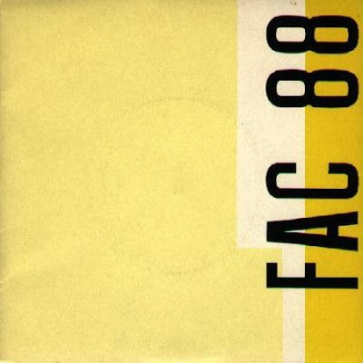
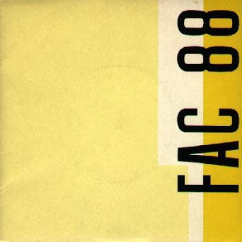

David Carson
September 8, 1955 - United States
David Carson is an American graphic designer, art director and surfer. He is best known for his innovative magazine design, and use of experimental typography. He was the art director for the magazine Ray Gun, in which he employed much of the typographic and layout style for which he is known. In particular, his widely imitated aesthetic defined the so-called "grunge typography" era.
Stefan Sagmeister
August 6, 1962 - Austria
Stefan Sagmeister is a New York-based graphic designer and typographer. Sagmeister co-founded a design firm called Sagmeister & Walsh Inc. with Jessica Walsh in New York City. He has designed album covers for Lou Reed, OK Go, The Rolling Stones, David Byrne, Jay Z, Aerosmith and Pat Metheny.
 

Peter Saville
9 October, 1955 - England
Peter Saville is an English art director and graphic designer. He came to fame for the many record sleeves he designed for Factory Records, of which he was a director, most notably for Joy Division and New Order.